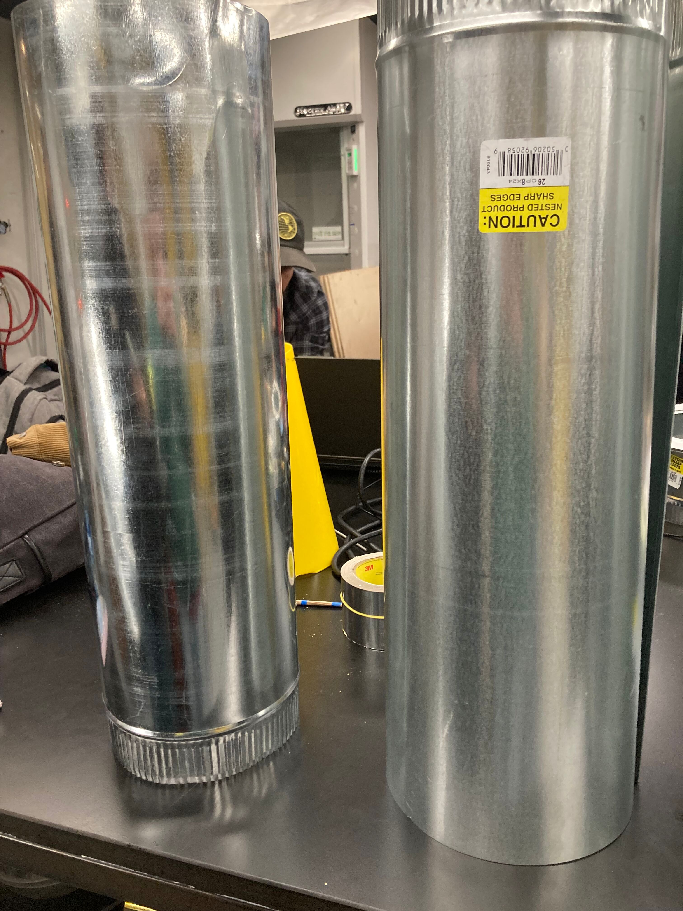
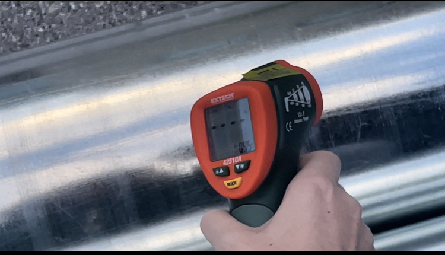

## Week 11:
### Monday:
I helped Catherine model our lead screw device that can adjust altitude in Fusion 360. We also finished hashing
out how all the parts worked, and I learned more about how Fusion works.
### Wednesday:
We realized that we had two different reflective tubes from an error at Home Depot. They had a different gauge,
and seemed to be finished using different processes. Christine and I attempted to determine which one was better
at reflecting infrared light (and would therefore be better for our solar cooker).
However, we could not find the FLIR camera, so we had to use the handheld detector.
Unfortunately, it was not able to measure the reflected temperature of the sky on the two tubes because it was too
cold. The detector just gave a reading of “- - - -”. Joel helped Christine and I to come to the conclusion that
this probably would not have a large effect on our solar cooker results.


We also continued using CAD. I helped Catherine work on creating a model of our stepper motor so that we can
create a cover for it so our extendable rod would not twist or scratch the motor. I helped measure the parts.
Unfortunately, we ended up with some of the parts of our model not being centered correctly, so we still have to
work on creating our final model.